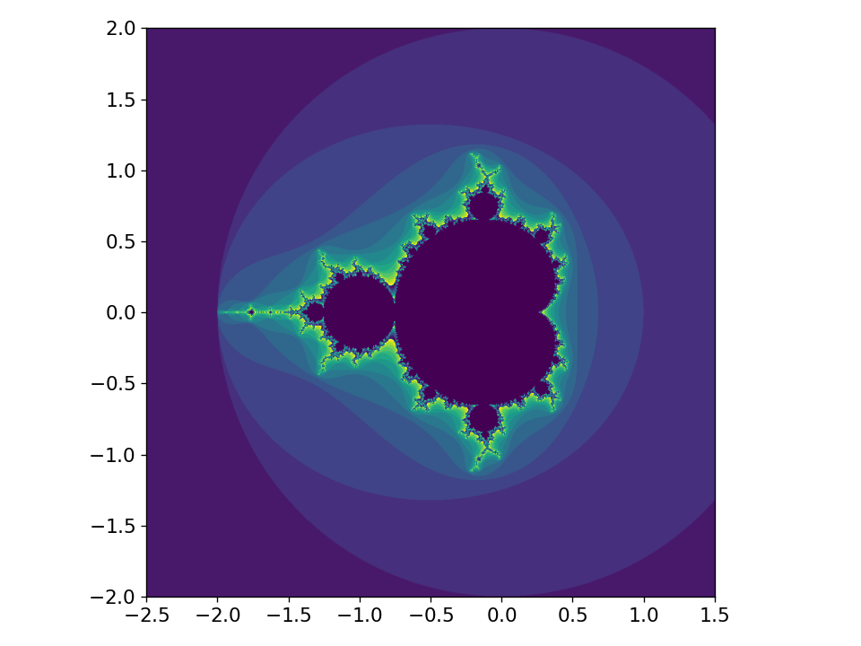

Example Extension#
Let’s rewrite our Mandelbrot generator using different languages to see how the performance differs.
Recall the Mandelbrot set is defined as the set such that \(z_{k+1} = z_k^2 + c\) remains bounded, defined as \(|z_{k+1}| \le 2\), where \(c\) is a complex number, \(c = x + iy\), in the complex plane, and \(z_0 = 0\) is the starting condition.
We’ll do a fixed number of iterations, and store the iteration for which \(|z_{k+1}|\) first becomes larger than 2.
NumPy array syntax#
Here’s an example of a python implementation using NumPy array operations:
import numpy as np
def mandelbrot(N,
xmin=-2.0, xmax=2.0,
ymin=-2.0, ymax=2.0,
max_iter=10):
x = np.linspace(xmin, xmax, N)
y = np.linspace(ymin, ymax, N)
xv, yv = np.meshgrid(x, y, indexing="ij")
c = xv + 1j * yv
z = np.zeros((N, N), dtype=np.complex128)
m = np.zeros((N, N), dtype=np.int32)
for i in range(1, max_iter+1):
z[m == 0] = z[m == 0]**2 + c[m == 0]
m[np.logical_and(np.abs(z) > 2, m == 0)] = i
return m
We can test this as:
import matplotlib.pyplot as plt
import numpy as np
import mandel
import time
start = time.time()
xmin = -2.5
xmax = 1.5
ymin = -2.0
ymax = 2.0
m = mandel.mandelbrot(1024, xmin, xmax, ymin, ymax, max_iter=50)
print(f"execution time = {time.time() - start}\n")
fig, ax = plt.subplots()
ax.imshow(np.transpose(m % 16), origin="lower",
extent=[xmin, xmax, ymin, ymax], cmap="viridis")
fig.tight_layout()
fig.savefig("test.png")
Here’s the resulting image
Python with explicit loops#
Here’s a version where the loops are explicitly written out in python:
import numpy as np
def mandelbrot(N,
xmin=-2.0, xmax=2.0,
ymin=-2.0, ymax=2.0,
max_iter=10):
x = np.linspace(xmin, xmax, N)
y = np.linspace(ymin, ymax, N)
c = np.zeros((N, N), dtype=np.complex128)
for i in range(N):
for j in range(N):
c[i, j] = x[i] + 1j * y[j]
z = np.zeros((N, N), dtype=np.complex128)
# note: we need to use a numba type here
m = np.zeros((N, N), dtype=np.int32)
for n in range(1, max_iter+1):
for i in range(N):
for j in range(N):
if m[i, j] == 0:
z[i, j] = z[i, j] * z[i, j] + c[i, j]
if np.abs(z[i,j]) > 2:
m[i, j] = n
return m
This can be run using the same driver as the numpy vectorized version.
Numba version#
We can install Numba simply by doing:
pip install numba
To get a Numba optimized version of the python with explicit loops we just add:
from numba import njit
and then right before the function definition:
@njit()
Here’s the full code:
import numpy as np
from numba import njit
@njit(nopython=True)
def mandelbrot(N,
xmin=-2.0, xmax=2.0,
ymin=-2.0, ymax=2.0,
max_iter=10):
x = np.linspace(xmin, xmax, N)
y = np.linspace(ymin, ymax, N)
c = np.zeros((N, N), dtype=np.complex128)
for i in range(N):
for j in range(N):
c[i, j] = x[i] + 1j * y[j]
z = np.zeros((N, N), dtype=np.complex128)
# note: we need to use a numba type here
m = np.zeros((N, N), dtype=np.int32)
for n in range(1, max_iter+1):
for i in range(N):
for j in range(N):
if m[i, j] == 0:
z[i, j] = z[i, j] * z[i, j] + c[i, j]
if np.abs(z[i, j]) > 2:
m[i, j] = n
return m
Again, this uses the same driver.
Note
We didn’t need to do anything special to compile the numba code. This is done for us when we first encounter it.
Tip
We run it twice in our driver, since the first call will have the overhead of the JIT compilation.
import matplotlib.pyplot as plt
import numpy as np
import mandel
import time
start = time.time()
xmin = -2.5
xmax = 1.5
ymin = -2.0
ymax = 2.0
m = mandel.mandelbrot(1024, xmin, xmax, ymin, ymax, max_iter=50)
print(f"execution time (including jit) = {time.time() - start}\n")
start = time.time()
m = mandel.mandelbrot(1024, xmin, xmax, ymin, ymax, max_iter=50)
print(f"second run time = {time.time() - start}\n")
fig, ax = plt.subplots()
ax.imshow(np.transpose(m % 16), origin="lower",
extent=[xmin, xmax, ymin, ymax], cmap="viridis")
fig.tight_layout()
fig.savefig("test.png")
Tip
We can get even better performance if we let numba do things in parallel, with
@njit(parallel=True)
Cython version#
We can install Cython by doing
pip install Cython
For Cython, we mainly need to specify the datatypes of the different
variables. We use the extension .pyx for a cython file.
Here’s the full code:
import cython
import numpy as np
cimport numpy as np
@cython.boundscheck(False)
@cython.wraparound(False)
@cython.returns(np.ndarray)
def mandelbrot(int N,
double xmin=-2.0, double xmax=2.0,
double ymin=-2.0, double ymax=2.0,
int max_iter=10):
cdef np.ndarray[np.float64_t, ndim=1] x = np.linspace(xmin, xmax, N, dtype=np.float64)
cdef np.ndarray[np.float64_t, ndim=1] y = np.linspace(ymin, ymax, N, dtype=np.float64)
cdef np.ndarray[np.complex128_t, ndim=2] c = np.zeros((N, N), dtype=np.complex128)
cdef unsigned int i, j
for i in range(N):
for j in range(N):
c[i, j] = x[i] + 1j * y[j]
cdef np.ndarray[np.complex128_t, ndim=2] z = np.zeros((N, N), dtype=np.complex128)
cdef np.ndarray[np.int32_t, ndim=2] m = np.zeros((N, N), dtype=np.int32)
cdef unsigned int n
for n in range(1, max_iter+1):
for i in range(N):
for j in range(N):
if m[i, j] == 0:
z[i, j] = z[i, j] * z[i, j] + c[i, j]
if abs(z[i,j]) > 2:
m[i, j] = n
return m
To build it, we can use a setup.py file:
from setuptools import setup
from Cython.Build import cythonize
setup(name="mandel",
ext_modules=cythonize("mandel.pyx"),
zip_safe=False)
and make the extension as:
python setup.py build_ext --inplace
Note
This build process will likely change in the near future, as
the community is transitioning away from setup.py, but the
docs don’t seem to be fully up to date on the new way to build.
Tip
To help understand where the slow parts of your Cython code are, you can do
cythonize -a mandel.pyx
This will produce an HTML file with the parts of the code that interact
with python highlighted. (Make sure there are no .c files hanging around).
These highlighted lines are places you should try to optimize.
For our example, if we do
np.abs(z[i,j])
instead of
abs(z[i,j])
we get a dramatic slowdown!
Thanks to Eric Johnson for pointing this out.
Fortran implementation#
If we want to write the code in Fortran, we need to compile it into a shared
object library that python can import.
This is where f2py comes in—it is part of the numpy project, so you probably
already have it installed.
Note
Support for this is in transition at the moment. The old official way to do this
was to use distutils, but this is removed in python 3.12.
Instead, we will use the meson build system.
We need to install meson and ninja:
pip install meson ninja
Here’s our Fortran implementation for the Mandelbrot generator:
subroutine mandelbrot(N, xmin, xmax, ymin, ymax, max_iter, m)
implicit none
integer, intent(in) :: N
double precision, intent(in) :: xmin, xmax, ymin, ymax
integer, intent(in) :: max_iter
integer, intent(out) :: m(N, N)
double complex, parameter :: i_unit = (0, 1)
!f2py depend(N) :: m
!f2py intent(out) :: m
integer :: i, j, niter
double precision :: x(N), y(N)
double precision :: dx, dy
double complex, allocatable :: c(:, :)
double complex, allocatable :: z(:, :)
! compute coordinates
dx = (xmax - xmin) / (N - 1)
dy = (ymax - ymin) / (N - 1)
do i = 1, N
x(i) = xmin + (i-1) * dx
y(i) = ymin + (i-1) * dy
enddo
allocate(c(N, N))
do j = 1, N
do i = 1, N
c(i, j) = x(i) + i_unit * y(j)
enddo
enddo
m(:, :) = 0
allocate(z(N, N))
z(:, :) = 0.0
do niter = 1, max_iter
do j = 1, N
do i = 1, N
if (m(i, j) == 0) then
z(i, j) = z(i, j) * z(i, j) + c(i, j)
if (abs(z(i,j)) > 2) then
m(i, j) = niter
endif
endif
enddo
enddo
enddo
end subroutine mandelbrot
To build the extension, we can do:
f2py -c mandel.f90 -m mandel_f2py
Note
If the f2py command-line tool is not available, you can try running it as a module instead:
python -m numpy.f2py -c mandel.f90 -m mandel_f2py
Tip
The build doesn’t show you the compilation commands used to make the library. But if you look at the output, it will say something like:
The Meson build system
Version: 1.4.0
Source dir: /tmp/tmp0sbl86zt
Build dir: /tmp/tmp0sbl86zt/bbdir
Build type: native build
Project name: mandel_f2py
If you then look in the build directory, there will be a file compile_commands.json that
lists the commands that meson + f2py use to compile the extension. In our case,
it is using the optimization flag -O3.
This will create a library (on my machine, it is called mandel_f2py.cpython-312-x86_64-linux-gnu.so)
which we can import as import mandel_f2py.
Here’s a driver:
import matplotlib.pyplot as plt
import numpy as np
import mandel_f2py
import time
start = time.time()
xmin = -2.5
xmax = 1.5
ymin = -2.0
ymax = 2.0
max_iter = 50
m = mandel_f2py.mandelbrot(1024, xmin, xmax, ymin, ymax, max_iter)
print(f"execution time = {time.time() - start}\n")
fig, ax = plt.subplots()
ax.imshow(np.transpose(m), origin="lower",
extent=[xmin, xmax, ymin, ymax])
fig.tight_layout()
fig.savefig("test.png")
Note
Even though our Fortran subroutine takes the array m as an
argument, since it is marked as intent(out), the python module
will use this as the return value.
Note
The numpy array returned to python will have Fortran ordering (column-major) instead
of the usual row-major ordering (take a look at the .flags attributes).
C++ / pybind11 implementation#
pybind11 allows you to construct a numpy-compatible array in C++ and return it. There are different constructors for this—here we use on that allows us to specify the shape and stride.
We can install pybind11 via pip:
pip install pybind11
Inside of the mandelbrot() function, we need temporary
two-dimensional arrays to store \(z\) and \(c\). With C++23
we could use std::mdspan to give us nice multidimensional
indexing. For now, we need to do something different.
Our first attempt will use std::vector<std::vector<std::complex<double>>>.
Here’s the implementation of our Mandelbrot generator:
#include <iostream>
#include <cmath>
#include <complex>
#include <vector>
#include <pybind11/pybind11.h>
#include <pybind11/numpy.h>
namespace py = pybind11;
using cmplx_arr = std::vector<std::vector<std::complex<double>>>;
using namespace std::complex_literals;
py::array_t<int> mandelbrot(int N,
double xmin, double xmax,
double ymin, double ymax, int max_iter) {
// construct the numpy array we will return
// we need to specify the strides manually
constexpr std::size_t elsize = sizeof(int);
std::size_t shape[2]{N, N};
std::size_t strides[2]{N * elsize, elsize};
auto m = py::array_t<int>(shape, strides);
auto m_view = m.mutable_unchecked<2>();
// for the other arrays used only here, we can
// do whatever we want. Since we can't yet rely
// on C++23 mdspan, we'll just do a vector of vectors
std::vector<double> x(N, 0.0);
std::vector<double> y(N, 0.0);
double dx = (xmax - xmin) / static_cast<double>(N - 1);
double dy = (ymax - ymin) / static_cast<double>(N - 1);
for (int i = 0; i < N; ++i) {
x[i] = xmin + static_cast<double>(i) * dx;
y[i] = ymin + static_cast<double>(i) * dy;
}
cmplx_arr c(N, std::vector<std::complex<double>>(N, 0.0));
cmplx_arr z(N, std::vector<std::complex<double>>(N, 0.0));
// initialize c;
for (int i = 0; i < N; ++i) {
for (int j = 0; j < N; ++j) {
c[i][j] = x[i] + 1i * y[j];
}
}
// zero out the output array
for (int i = 0; i < m.shape(0); ++i) {
for (int j = 0; j < m.shape(1); ++j) {
m_view(i, j) = 0;
}
}
for (int niter = 1; niter <= max_iter; ++niter) {
for (int i = 0; i < m.shape(0); ++i) {
for (int j = 0; j < m.shape(1); ++j) {
if (m_view(i, j) == 0) {
z[i][j] = z[i][j] * z[i][j] + c[i][j];
if (std::abs(z[i][j]) > 2) {
m_view(i, j) = niter;
}
}
}
}
}
return m;
}
PYBIND11_MODULE(mandel, m) {
m.doc() = "C++ Mandelbrot example";
m.def("mandelbrot", &mandelbrot, "generate the Mandelbrot set of size N");
}
We build the shared library as:
g++ -DNDEBUG -O3 -Wall -Wextra -shared -std=c++17 -fPIC $(python3 -m pybind11 --includes) mandel.cpp -o mandel$(python3-config --extension-suffix)
Our driver is essentially the same as the Fortran one.
import matplotlib.pyplot as plt
import numpy as np
import mandel
import time
start = time.time()
xmin = -2.5
xmax = 1.5
ymin = -2.0
ymax = 2.0
max_iter = 50
m = mandel.mandelbrot(1024, xmin, xmax, ymin, ymax, max_iter)
print(f"execution time = {time.time() - start}\n")
fig, ax = plt.subplots()
ax.imshow(np.transpose(m), origin="lower",
extent=[xmin, xmax, ymin, ymax])
fig.tight_layout()
fig.savefig("test.png")
A slightly more complicated version that creates a contiguous Array class
that can be indexed with () runs faster. That code is here:
#include <cstddef>
#include <cmath>
#include <complex>
#include <pybind11/pybind11.h>
#include <pybind11/numpy.h>
namespace py = pybind11;
using namespace std::complex_literals;
class Array {
int N;
std::vector<std::complex<double>> _data;
public:
Array(int N_in)
: N(N_in), _data(N_in * N_in, 0.0) {}
inline std::complex<double>& operator() (int row, int col) {
return _data[row * N + col];
}
};
py::array_t<int> mandelbrot(int N,
double xmin, double xmax,
double ymin, double ymax, int max_iter) {
// construct the numpy array we will return
// we need to specify the strides manually
constexpr std::size_t elsize = sizeof(int);
std::size_t shape[2]{N, N};
std::size_t strides[2]{N * elsize, elsize};
auto m = py::array_t<int>(shape, strides);
auto m_view = m.mutable_unchecked<2>();
// we'll use a simple contiguous array here. When
// C++23 mdspan is available, that will be preferred.
std::vector<double> x(N, 0.0);
std::vector<double> y(N, 0.0);
double dx = (xmax - xmin) / static_cast<double>(N - 1);
double dy = (ymax - ymin) / static_cast<double>(N - 1);
for (int i = 0; i < N; ++i) {
x[i] = xmin + static_cast<double>(i) * dx;
y[i] = ymin + static_cast<double>(i) * dy;
}
Array c(N);
Array z(N);
// initialize c;
for (int i = 0; i < N; ++i) {
for (int j = 0; j < N; ++j) {
c(i, j) = x[i] + 1i * y[j];
}
}
// zero out the output array
for (int i = 0; i < m.shape(0); ++i) {
for (int j = 0; j < m.shape(1); ++j) {
m_view(i, j) = 0;
}
}
for (int niter = 1; niter <= max_iter; ++niter) {
for (int i = 0; i < m.shape(0); ++i) {
for (int j = 0; j < m.shape(1); ++j) {
if (m_view(i, j) == 0) {
z(i, j) = z(i, j) * z(i, j) + c(i, j);
if (std::abs(z(i, j)) > 2) {
m_view(i, j) = niter;
}
}
}
}
}
return m;
}
PYBIND11_MODULE(mandel, m) {
m.doc() = "C++ Mandelbrot example";
m.def("mandelbrot", &mandelbrot, "generate the Mandelbrot set of size N");
}
It uses the same driver.
Timings#
On my machine, (python 3.13, numpy 2.2.5, Cython 3.0.12, GCC 15, numba 0.61.2, pybind11 2.13.6) here are some timings (average of 3 runs):
technique |
timings (s) |
|---|---|
python / numpy |
0.218 |
python w/ explicit loops |
17.4 |
Numba(*) |
0.0922 |
Cython |
0.0866 |
Fortran + f2py |
0.0860 |
C++ + pybind11 (vector of vector) |
0.120 |
C++ + pybind11 (contiguous |
0.108 |
(*) timing for the second invocation, which excludes JIT overhead.
We see that Numba, Cython, and Fortran are all quite close in performance, with C++ contiguous only slightly slower, and all of these much faster than the other implementations. It may be possible to further optimize the numpy version, but it is so much easier to just use Numba in this situation.